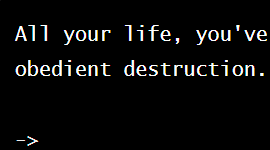

Twine Prototypes

Horizons
Designed to complement a larger story world, this narrative features an expansive set of explorable locales, an inventory system, a variety of discoverable events, and multiple endings. On Encounters
This narrative focuses on Spatial Exploration, emphasizing the sense of place and significance of environment as a storytelling device.

This narrative focuses on Character Dialogue, featuring a somewhat standard tree of first-person dialogue choices.

This narrative focuses on Temporal Structure, experimenting with a looping, science fiction approach.

This narrative focuses on Genre Archetypes, iterating on the song from the 1975 musical Chicago.

An early narrative to demonstrate basic Twine functionality.